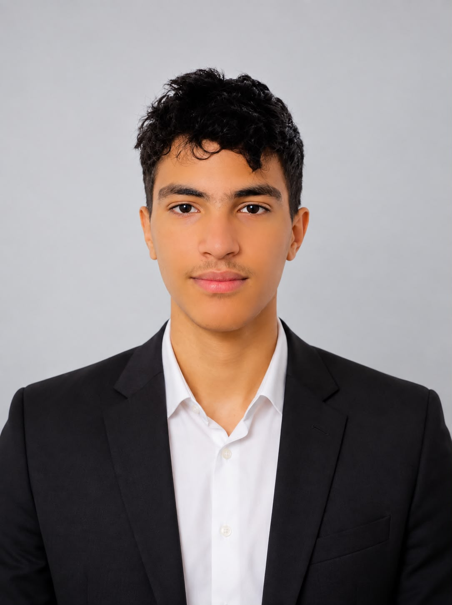

Abderrahmane
LaariqbatData Science & AI — from raw signal to working model.
A Data Science and AI student building machine learning systems across computer vision, agriculture and health — currently pursuing a Master's in Data Science and Artificial Intelligence at Ibn Zohr University.

About
01 — ProfileCurious about what happens between the data and the decision — and increasingly interested in applying that curiosity to biological problems: crops, cells, images.
I'm a Data Science and Artificial Intelligence student based in Agadir, Morocco, currently completing a Master's degree at the Faculty of Science Ibn Zohr after finishing my Bachelor's in the same program with excellence. Before that, I trained as a computer scientist through a University Diploma of Technology in Laâyoune.
My work sits at the intersection of machine learning, computer vision and data analysis — I like projects where a model has to earn its usefulness on real, messy data rather than a clean benchmark. Recent work has taken me from plant pathology to crop-yield forecasting to recommendation systems, and I'm actively drawn toward medical imaging and diagnostic AI as a next direction.
Education
02 — TimelineMaster, Excellence in Data Science and Artificial Intelligence
Advanced coursework and applied projects across machine learning, deep learning and statistical modelling, building on an excellence-track Bachelor's in the same field.
Bachelor (Licence), Excellence in Data Science and Artificial Intelligence
Foundational and applied training in data science and AI — statistics, machine learning, and the programming and database skills that underpin the projects on this site.
University Diploma of Technology (DUT), Computer Science
Core computer science training — programming fundamentals, databases and software development — that laid the groundwork for specializing in data and AI.
Research direction
03 — InterestsThe through-line in my work is applying learning systems to signals that come from living things — plant tissue, agricultural yield, and increasingly, medical imagery. I'm most interested in where a model's prediction has to hold up against biological variability, not just held-out test data.
Medical AI — polyp & cancer detection
My next research direction: extending the computer-vision methods I've used on plant disease toward diagnostic imaging, where detecting a lesion or polyp early carries real consequence.
Projects
04 — Selected workPlant Disease Detection
A convolutional neural network trained to recognize different plant diseases from leaf imagery, wrapped in a lightweight Streamlit interface so results are usable, not just accurate.
AgriSmart
A pipeline that predicts crop yield with an XGBoost classifier, with results served through a FastAPI endpoint for downstream use.
Movie Recommendation System
A content-based recommender built on cosine similarity between movie feature vectors, with a simple Streamlit front end for exploring results.